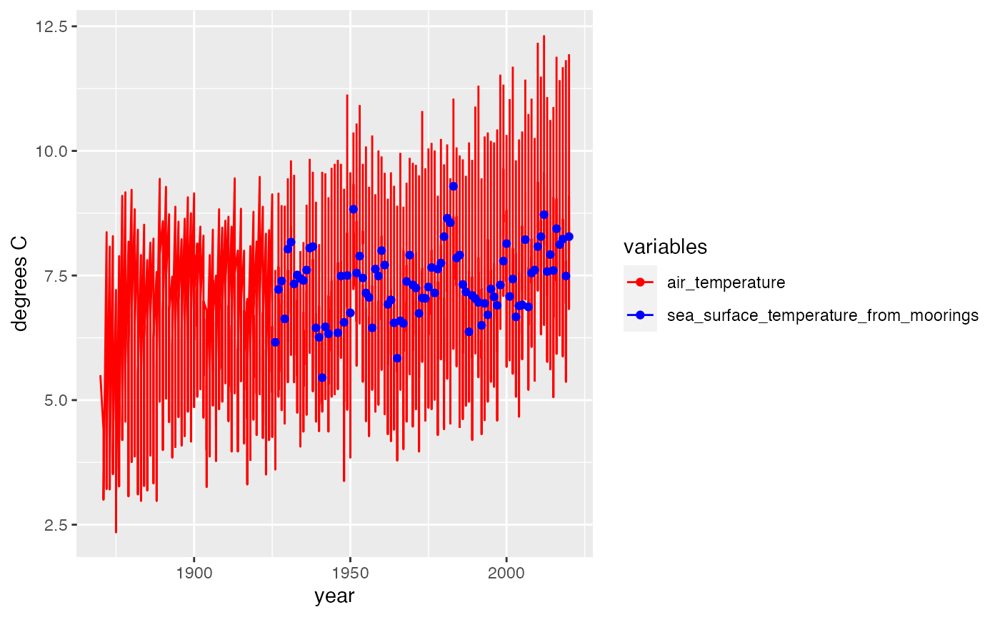
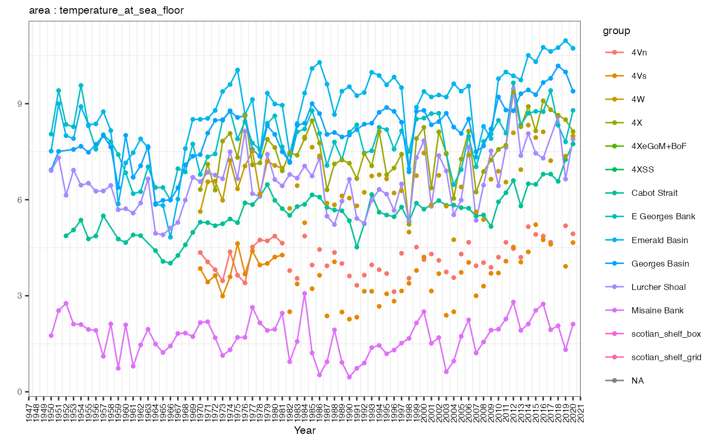
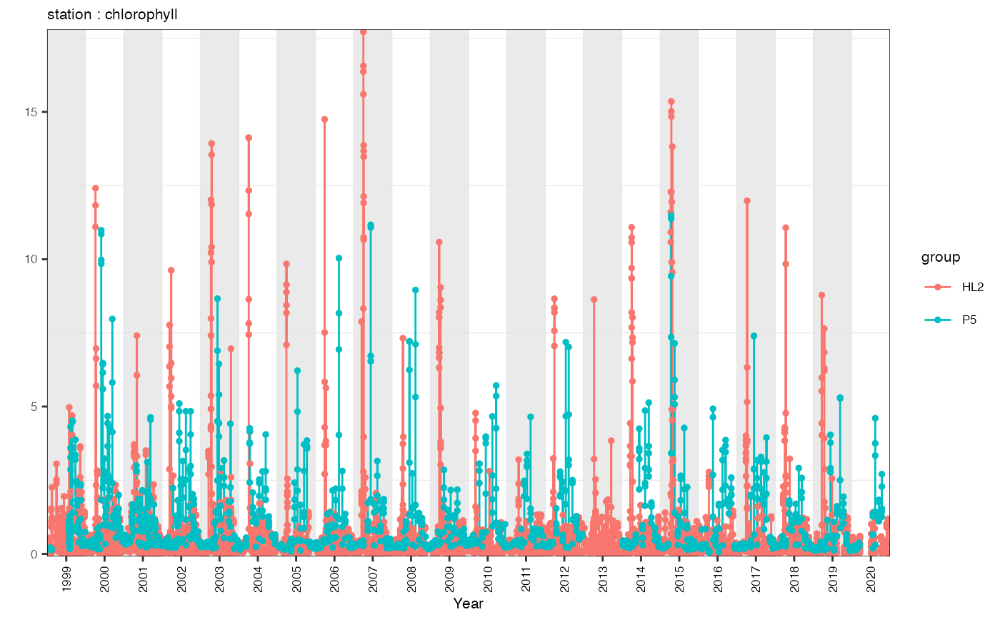

vignettes/plotting_azmpdata.Rmd
plotting_azmpdata.Rmd##
## casaultb/azmpdata status:
## (Package ver: 0.2019.0.9100) Up to date
## (Data ver:2021-01-14 ) is up to date##
## Attaching package: 'dplyr'## The following objects are masked from 'package:stats':
##
## filter, lag## The following objects are masked from 'package:base':
##
## intersect, setdiff, setequal, unionThe purpose of this vignette is to demonstrate how to plot data which is pulled from the azmpdata package. We show brief examples of various plotting methods including base plot, and ggplot2. We also review how to recreate default plots from the gslea package which has similar functionality to azmpdata but contains Gulf and Quebec region data products.
We will use sample data from the azmpdata package for each example. Data can be called using
## station year integrated_chlorophyll_0_100 integrated_nitrate_0_50
## 1 HL2 1999 68.03585 84.99264
## 2 HL2 2000 52.18247 153.67378
## 3 HL2 2001 68.30404 149.70984
## 4 HL2 2002 47.39108 103.19296
## 5 HL2 2003 96.47844 150.75062
## 6 HL2 2004 66.82304 126.26645
## integrated_nitrate_50_150 integrated_phosphate_0_50
## 1 914.0106 25.45192
## 2 1052.2351 30.76459
## 3 852.2082 37.95599
## 4 987.0082 31.49406
## 5 1043.7585 29.26172
## 6 857.7356 27.56220
## integrated_phosphate_50_150 integrated_silicate_0_50
## 1 95.31417 133.3231
## 2 106.72310 188.3993
## 3 115.86794 165.8927
## 4 112.73353 112.2547
## 5 105.77807 178.0901
## 6 99.64667 159.1486
## integrated_silicate_50_150 sea_surface_temperature_from_moorings
## 1 1027.9353 NA
## 2 1027.6653 NA
## 3 847.4100 NA
## 4 906.0111 NA
## 5 972.4782 NA
## 6 831.4975 NA
## temperature_in_air cruiseNumber longitude latitude pressure temperature_0
## 1 NA <NA> NA NA NA NA
## 2 NA <NA> NA NA NA NA
## 3 NA <NA> NA NA NA NA
## 4 NA <NA> NA NA NA NA
## 5 NA <NA> NA NA NA NA
## 6 NA <NA> NA NA NA NA
## temperature_90 integrated_sea_temperature_0_50 integrated_salinity_0_50
## 1 NA NA NA
## 2 NA NA NA
## 3 NA NA NA
## 4 NA NA NA
## 5 NA NA NA
## 6 NA NA NA
## integrated_sigmaTheta_0_50
## 1 NA
## 2 NA
## 3 NA
## 4 NA
## 5 NA
## 6 NAUsing base R to create plots can often be the simplest way for a novice to explore a dataset.
If we wanted to create a simple plot of a variable over time, it might look like this
plot(df$year, df$temperature_in_air, xlab = 'Year', ylab = 'temperature_in_air')Obviously there are many more advanced plots that can be made using base plot but we leave these up to the individual users to explore.
Using ggplot2 can give great simple exploratory plots, using a different ‘grammar’.
If a user wanted to compare different variables over time, ggplot2 has functions which make this very simple.
p <- ggplot(data = df) +
geom_line(aes(x = year, y = temperature_in_air, colour = 'air_temperature'), show.legend = TRUE) +
geom_point(aes(x = year, y = sea_surface_temperature_from_moorings, colour = 'sea_surface_temperature_from_moorings'), show.legend = TRUE)+
labs(y = 'degrees C' ) +
scale_color_manual(name = "variables",
breaks = c('air_temperature', 'sea_surface_temperature_from_moorings'),
values = c('air_temperature' = 'red', 'sea_surface_temperature_from_moorings' = 'blue'))
print(p)## Warning: Removed 5 row(s) containing missing values (geom_path).## Warning: Removed 1124 rows containing missing values (geom_point).
The next two examples contain generic code that could be modified to plot any dataframe (of the same time scale).
Another common plotting task would be to plot the annual means of a given dataframe. This method is fairly generic and could be used for any annual dataset.
df_data <- get('Derived_Annual_Broadscale') # get data
variable <- 'temperature_at_sea_floor' # select variable to plot
# check for metadata and seperate
metanames <- c('year','area', 'section', 'station' )
meta_df <- names(df_data)[names(df_data) %in% metanames]
group <- meta_df[meta_df != 'year']
df_data <- df_data %>%
dplyr::select(., all_of(meta_df), all_of(variable) ) %>%
dplyr::rename(., 'value' = all_of(variable) ) %>%
dplyr::rename(., 'group' = all_of(group))
# set x-axis
x_limits <- c(min(df_data$year)-1, max(df_data$year)+1)
x_breaks <- seq(x_limits[1], x_limits[2], by=1)
x_labels <- x_breaks
# set y-axis
y_limits <- c(min(df_data$value, na.rm=T) - 0.1*mean(df_data$value, na.rm=T),
max(df_data$value, na.rm=T) + 0.1*mean(df_data$value, na.rm=T))
# plot data
p <- ggplot2::ggplot() +
# plot data - line
ggplot2::geom_line(data=df_data,
mapping=ggplot2::aes(x=year, y=value, col = group),
size=.5) +
# plot data - dots
ggplot2::geom_point(data=df_data,
mapping=ggplot2::aes(x=year, y=value, col = group),
size=1) +
# set coordinates system and axes
ggplot2::coord_cartesian() +
ggplot2::scale_x_continuous(name="Year", limits=x_limits, breaks=x_breaks, labels=x_labels, expand=c(0,0)) +
ggplot2::scale_y_continuous(name="", limits=y_limits, expand=c(0,0))
# customize theme
p <- p +
ggplot2::theme_bw() +
ggplot2::ggtitle(paste(group, variable, sep=" : " )) +
ggplot2::theme(
text=ggplot2::element_text(size=8),
axis.text.x=ggplot2::element_text(colour="black", angle=90, hjust=0.5, vjust=0.5),
plot.title=ggplot2::element_text(colour="black", hjust=0, vjust=0, size=8),
panel.grid.major=ggplot2::element_blank(),
panel.border=ggplot2::element_rect(size=0.25, colour="black"),
plot.margin=grid::unit(c(0.1,0.1,0.1,0.1), "cm"))
print(p)## Warning: Removed 276 row(s) containing missing values (geom_path).## Warning: Removed 396 rows containing missing values (geom_point).
A user may also want to plot a timeseries. This method is also fairly generic and could be modified to plot any Occupations dataset.
df_data <- get('Discrete_Occupations_Stations') # get data
variable <- 'chlorophyll' # choose variable to plot
# check for metadata
metanames <- c('year', 'month', 'day', 'area', 'section', 'station' )
meta_df <- names(df_data)[names(df_data) %in% metanames]
group <- meta_df[!meta_df %in% c('year', 'month', 'day')]
df_data <- df_data %>%
dplyr::select(., all_of(meta_df), all_of(variable) ) %>%
dplyr::rename(., 'value' = all_of(variable) ) %>%
dplyr::rename(., 'group' = all_of(group)) #TODO some dataframes do not have groups!?
# prepare data
df_data <- df_data %>%
tidyr::unite(date, year, month, day, sep="-", remove=F) %>%
dplyr::mutate(year_dec=lubridate::decimal_date(lubridate::ymd(date))) %>%
dplyr::select(year, year_dec, value, group)
# set x-axis
x_limits <- c(min(df_data$year), max(df_data$year)+1)
x_breaks <- seq(x_limits[1]+.5, x_limits[2]-.5, by=1)
x_labels <- x_breaks-.5
# set y-axis
y_limits <- c(min(df_data$value, na.rm=T) - 0.1*mean(df_data$value, na.rm=T),
max(df_data$value, na.rm=T) + 0.1*mean(df_data$value, na.rm=T))
## set shaded rectangles breaks
df_rectangles <- tibble::tibble(xmin=seq(x_limits[1], x_limits[2], by=2),
xmax=seq(x_limits[1], x_limits[2], by=2)+1,
ymin=y_limits[1], ymax=y_limits[2])
# plot data
p <- ggplot2::ggplot() +
# plot shaded rectangles
ggplot2::geom_rect(data=df_rectangles,
mapping=ggplot2::aes(xmin=xmin, xmax=xmax, ymin=ymin, ymax=ymax),
fill="gray90", alpha=0.8) +
# plot data - line
ggplot2::geom_line(data=df_data,
mapping=ggplot2::aes(x=year_dec, y=value, col = group),
size=.5) +
# plot data - dots
ggplot2::geom_point(data=df_data,
mapping=ggplot2::aes(x=year_dec, y=value, col = group),
size=1) +
# set coordinates system and axes
ggplot2::coord_cartesian() +
ggplot2::scale_x_continuous(name="Year", limits=x_limits, breaks=x_breaks, labels=x_labels, expand=c(0,0)) +
ggplot2::scale_y_continuous(name="", limits=y_limits, expand=c(0,0))
# customize theme
p <- p +
ggplot2::theme_bw() +
ggplot2::ggtitle(paste(group, variable, sep=" : " )) +
ggplot2::theme(
text=ggplot2::element_text(size=8),
axis.text.x=ggplot2::element_text(colour="black", angle=90, hjust=0.5, vjust=0.5),
plot.title=ggplot2::element_text(colour="black", hjust=0, vjust=0, size=8),
panel.grid.major=ggplot2::element_blank(),
panel.border=ggplot2::element_rect(size=0.25, colour="black"),
plot.margin=grid::unit(c(0.1,0.1,0.1,0.1), "cm"))
print(p)## Warning: Removed 1 rows containing missing values (geom_rect).## Warning: Removed 186 row(s) containing missing values (geom_path).## Warning: Removed 6042 rows containing missing values (geom_point).
gslea was a package developed to support ecosystem approach research in the Gulf Region. It contains a plotting function EA.plot.f() which can be replicated using azmpdata.
Note these plots may appear very small in the notebook format.
dat <- get('Derived_Annual_Stations')
actual_EARs <- unique(dat$station) # get regions to plot
dat_only <- dat[,!names(dat) %in% c('station', 'year', 'cruiseNumber', 'longitude', 'latitude', 'pressure')] # isolate data variables to plot (not metadata)
no_plots <- length(dat_only)*length(actual_EARs) # calculate number of plots ot be displayed
# set par info based on number of plots (max 25 per page)
if(no_plots > 25) {par(mfcol = c(5, 5), mar = c(1.3,2,3.2,1), omi = c(.1,.1,.1,.1), ask = T)}
if(no_plots <= 25){par(mfcol = c(length(dat_only), length(actual_EARs)), mar = c(1.3,2,3.2,1), omi = c(.1,.1,.1,.1))}
counter <- 1
for(i in actual_EARs){ # loop through regions
ear_dat <- dat[dat$station == i,]
for(ii in 1:length(dat_only)){ # loop by variables
var_dat <- data.frame('value' = ear_dat[[names(dat_only)[[ii]]]], 'station' = ear_dat$station, 'year' = ear_dat$year) # get only one variable for one region
if(!is.na(diff(range(var_dat$value)))){ # if all values are NA skip over plotting
# plot
if(nrow(var_dat) < 1) plot(0,
xlab = "", ylab = "",
xaxt = "n", yaxt = "n",
main = paste("Station",i,names(dat_only)[[ii]]))
if(nrow(var_dat) > 0) plot(var_dat$year, var_dat$value,
xlab = "", ylab = "",
main = paste("Station",i,names(dat_only)[[ii]]))
}
}
counter <- counter+1
}
# set par info
par(mfcol = c(1,1), omi = c(0,0,0,0), mar = c(5.1, 4.1, 4.1, 2.1), ask = F)